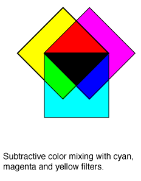

|  |
Subtractive color mixing is the kind of mixing you get if you illuminate colored filters with white light from behind, as illustrated at left. The commonly used subtractive primary colors are cyan, magenta and yellow, and if you overlap all three in effectively equal mixture, all the light is subtracted giving black. Subtractive color mixing is more complex than the additive color mixing you get with colored spotlights.
|